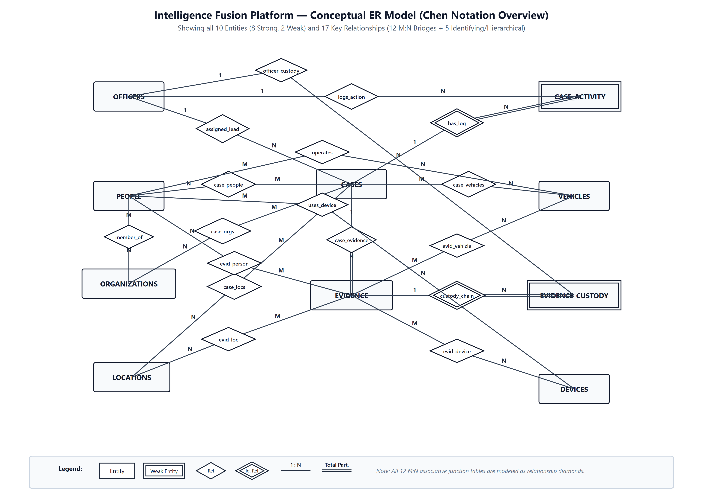
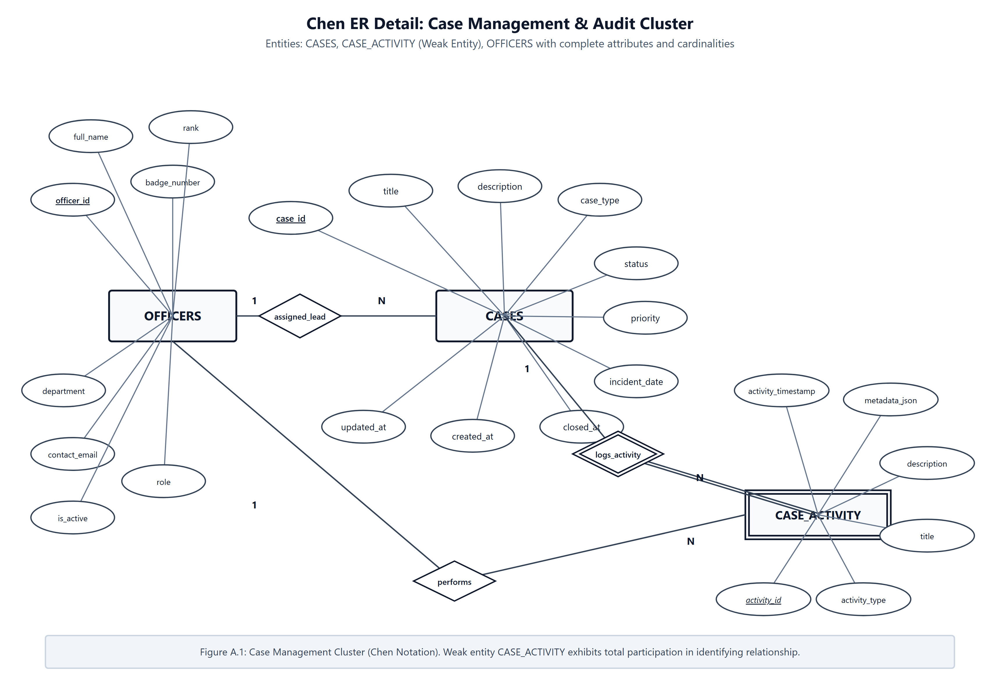
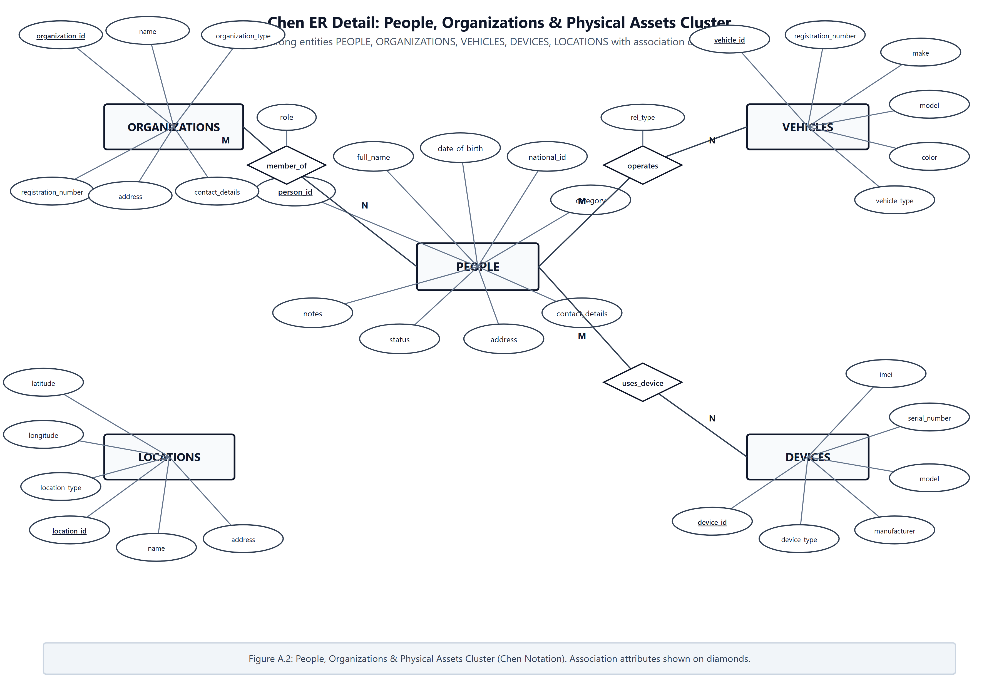
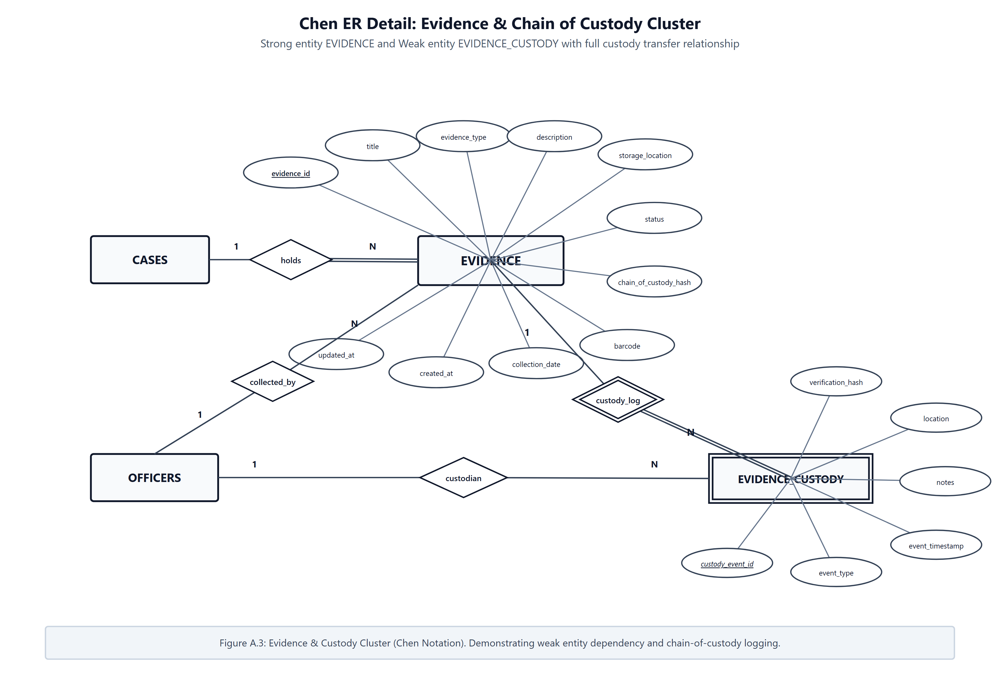
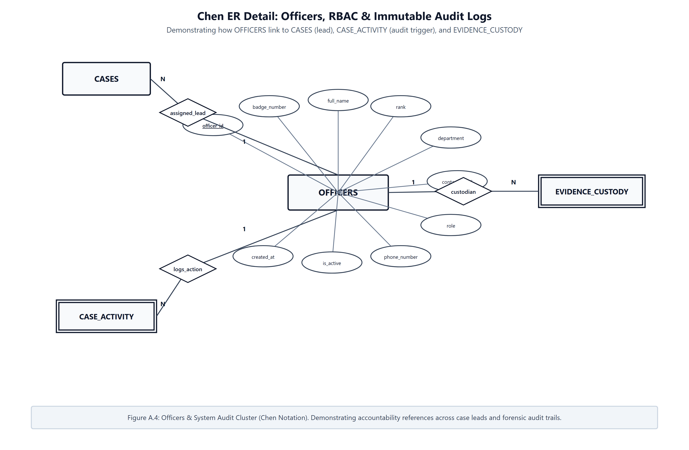
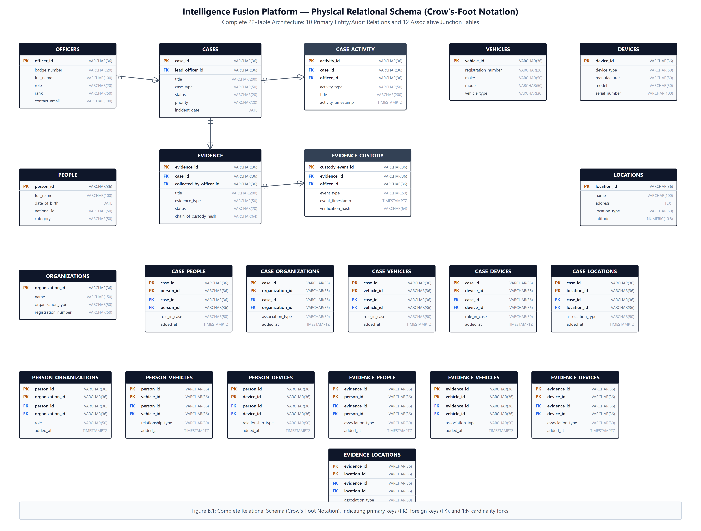

The Intelligence Fusion Platform is an operational case-management and intelligence integration system designed for multi-agency law enforcement coordination. The relational model models cases, assigned investigative personnel, implicated subjects, commercial organizations, motor vehicles, digital devices, geospatial coordinates, physical exhibits, and custody transfers.
The schema consists of 22 normalized tables: 10 primary entity/audit relations and 12 associative junction tables. To maintain strict visual clarity without clutter, we present our entity-relationship design in both Chen notation (conceptual modeling) and Crow's-Foot notation (physical implementation), organized as an overarching system overview and modular domain clusters.
In our Chen notation diagrams, we adhere to formal academic database design semantics:
| Notation Element | Visual Representation | Applied Semantics in Project Schema |
|---|---|---|
| Strong Entity | Single Rectangle | Independent domain relations: officers, cases, people, organizations, vehicles, devices, locations, evidence. |
| Weak Entity | Double Rectangle | Existence-dependent audit logs: evidence_custody (depends on evidence) and case_activity (depends on cases). |
| Relationship | Single Diamond | Binary associations connecting participating entities with labeled cardinalities (1:1, 1:N, M:N). |
| Identifying Relationship | Double Diamond | Binds weak entities to owner parents with double connecting lines signifying total participation. |
| Attributes & Keys | Ellipses | Underlined text indicates Primary Keys; dashed underlining indicates partial discriminators. |
| Relationship Attributes | Ellipses on Diamonds | Attributes stored on M:N associative junction bridges (e.g. role_in_case, association_type, added_at). |
Figure 1 illustrates the complete conceptual architecture across all 10 entities and their 17 primary relationships (including the 12 many-to-many junction bridges modeled as relationship diamonds).

To ensure every attribute oval, key constraint, and relationship parameter is readable at 100% scale on A4 paper, we divide the conceptual model into four focused domain clusters:
Figure 2 models core case provisioning and immutable audit trail capture. Weak entity case_activity exhibits total participation in the identifying relationship logs_activity owned by cases.

CASES, weak entity CASE_ACTIVITY, and lead investigator assignment from OFFICERS.
Figure 3 captures implicated actors, criminal organizations, vehicles, mobile hardware, and physical incident coordinates. Associations between entities carry specific attributes (e.g., role in organization, relationship_type for vehicles and devices).

Figure 4 details physical and digital exhibits seized during investigations. Weak entity evidence_custody enforces an unbroken, tamper-evident transfer record via identifying relationship custody_chain with parent evidence.

Figure 5 illustrates accountability linkages where law enforcement officers act as case leads, evidence collecting agents, custody transfer recipients, and system activity performers.

Figure 6 presents the physical relational implementation of the database in Crow's-Foot notation, comprising all 22 tables. Primary keys (PK) and foreign keys (FK) are typed, and cardinalities represent exact database engine enforcement.

We implemented three critical architectural decisions during data modeling:
added_at, role_in_case, notes).case_activity and evidence_custody cannot exist without a valid parent case or evidence item. Their life cycle is bound to the parent entity via foreign key constraints with ON DELETE CASCADE or RESTRICT.CASE-2026-001, PER-001, EVD-001, OFF-001) backed by VARCHAR(36). This supports human auditing, physical barcode labeling, and direct migration between PostgreSQL and SQLite.